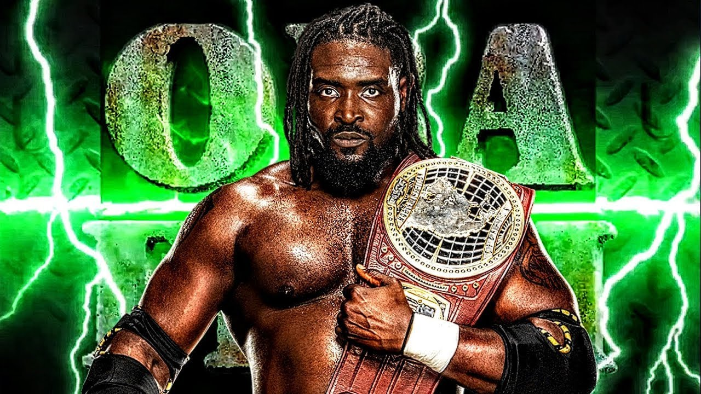

La vera storia di Oba Femi: chi è il Ruler, dal lancio del peso al King of the Ring
Dal lancio del peso in Nigeria e in Alabama al Performance Center, dal Breakout Tournament ai due regni da campione di NXT, fino alle vittorie su Brock Lesnar a WrestleMania 42 e dentro Hell in a Cell. Chi è Oba Femi, aggiornato a ottobre 2026.
Quando ho fatto il video qui sopra, Oba Femi era una promessa di NXT. Una delle tante, pensavano in molti.
Oggi, ottobre 2026, ha battuto Brock Lesnar due volte, ha vinto il King of the Ring e la WWE lo sta costruendo come il prossimo grande campione. Chi è Oba Femi? Te lo racconto dall'inizio.
Gli inizi: il lancio del peso
Torioluwa Oshiumi Isaac Odugbesan nasce il 22 aprile 1998 a Lagos, in Nigeria. Prima del wrestling c'è l'atletica: è un lanciatore del peso.
All'Università di Lagos vince dieci medaglie ai Giochi universitari nigeriani. Nel 2017 si trasferisce negli Stati Uniti con una borsa di studio, prima a Middle Tennessee State, poi all'Università dell'Alabama. Lì vince tre titoli della SEC nel lancio del peso, tra indoor e outdoor. Nel 2022 si laurea in arti visive.
Forza esplosiva, disciplina da atleta vero. La WWE se ne accorge.
Non è un caso isolato: negli ultimi anni la WWE ha pescato sempre più spesso nello sport universitario americano, cercando atleti con un fisico già pronto da trasformare in wrestler. Oba Femi è forse l'esempio più riuscito di questa strategia.
La firma e il Performance Center
Fa un provino ad agosto 2021 e l'8 dicembre 2021 firma con la WWE, attraverso il programma Next In Line per gli atleti universitari. Ad agosto 2022 arriva al Performance Center.
Il primo match in TV è una sconfitta, a fine 2022. Ma il vero debutto arriva il 25 aprile 2023, a NXT Spring Breakin': batte Oro Mensah e si capisce subito che non è uno qualunque.
Il Breakout Tournament e il titolo North American
Vince il Breakout Tournament di NXT battendo Myles Borne, Tavion Heights e, in finale, Riley Osborne, il 2 gennaio 2024 a New Year's Evil. Il premio è un contratto per un match titolato quando vuole.
Lo usa una settimana dopo. Il 9 gennaio 2024 incassa su Dragon Lee, appena uscito da una difesa contro Lexis King, e diventa NXT North American Champion. Lo difende contro avversari come Dragon Lee, Lexis King e Brooks Jensen, e lo tiene 273 giorni, fino all'8 ottobre 2024, quando lo perde contro Tony D'Angelo.
Per un ragazzo che due anni prima non aveva mai lottato in TV, è un regno lunghissimo. Ed è qui che NXT capisce di avere tra le mani qualcosa di speciale.
Il Ruler di NXT
Il 7 gennaio 2025, a New Year's Evil, vince l'NXT Championship in un triple threat contro Trick Williams. Nasce The Ruler: un campione dominante, che sembra impossibile da battere. Il regno dura 263 giorni, fino al 27 settembre 2025, quando lo perde contro Ricky Saints.
Il 6 dicembre 2025 se lo riprende a NXT Deadline. Ma ormai NXT gli sta stretto. Il 6 gennaio 2026 lascia la cintura sul ring: il titolo viene reso vacante, e se lo prenderà Joe Hendry in un ladder match.
Perché è diverso dagli altri
Oba Femi non urla. Non ha bisogno di promo lunghissimi. Entra, guarda l'avversario dall'alto in basso e lo solleva come se fosse niente.
È la forza del lanciatore del peso, unita a una calma che di solito si vede nei veterani. Per questo lo chiamano The Ruler: non chiede rispetto, se lo prende. E in un'epoca in cui tanti wrestler si somigliano, uno così si riconosce al primo sguardo.
Il main roster e Brock Lesnar
Il primo assaggio è il 13 dicembre 2025, a Saturday Night's Main Event, contro Cody Rhodes: campione contro campione, finisce in no contest per l'intervento di Drew McIntyre.
Alla Royal Rumble 2026 entra con il numero 1, elimina cinque avversari e viene buttato fuori da Brock Lesnar. Il conto si apre lì.
Il 16 marzo 2026 risponde all'open challenge di Brock Lesnar. E il 19 aprile 2026, a WrestleMania 42, lo batte. Lesnar si vendica il 31 maggio a Clash in Italy, la prima sconfitta di Oba nel main roster.
King of the Ring e Hell in a Cell
Il 27 giugno 2026, a Night of Champions, batte Jey Uso in finale e vince il King of the Ring. Il premio è un match per il titolo mondiale. Lui lo rimanda: prima vuole chiudere i conti con Lesnar.
Il 1° agosto 2026, a SummerSlam, lo batte dentro Hell in a Cell. Fine della rivalità.
Pensaci un attimo: in poco più di sei mesi di main roster, Oba Femi ha battuto due volte Brock Lesnar, uno che per anni è stato presentato come imbattibile. Pochi debutti nella storia recente della WWE sono stati costruiti così.
Oggi è a Raw. Il 6 settembre batte Bron Breakker per squalifica, e il 10 ottobre a Money in the Bank batte Bronson Reed nonostante l'intervento della Vision.
Cosa ne penso
Nel video lo avevo detto: il viaggio di Oba Femi era appena iniziato, ed eravamo agli inizi di una leggenda.
E l'ho ripetuto anche in un pronostico: secondo me è lui l'uomo che può battere Roman Reigns. Il Tribal Chief contro il Ruler. Ho spiegato perché in chi può battere Roman Reigns? La risposta è Oba Femi. Non adesso, non in fretta: a WrestleMania, quando ogni passo avrà avuto un senso.
Guarda il video qui sopra e iscriviti al canale Tony Wrestling su YouTube. Segui tutto su di lui nella pagina di Oba Femi, e le altre storie nella rubrica La vera storia di… e nella sezione video.
Fonti:
- Oba Femi, Wikipedia (nascita, atletica, titoli, carriera 2025-2026; consultata il 21 ottobre 2026)
- Oba Femi, WWE.com
- Fightful, risultati di Sunday Night's Main Event del 6 settembre 2026
- Video di Tony Wrestling: L'incredibile storia di Oba Femi
Domande frequenti
Qual è il vero nome di Oba Femi?
Torioluwa Oshiumi Isaac Odugbesan. È nato il 22 aprile 1998 a Lagos, in Nigeria.
Quanti anni ha Oba Femi?
È nato il 22 aprile 1998, quindi a ottobre 2026 ha 28 anni.
Quali titoli ha vinto Oba Femi?
L'NXT North American Championship (273 giorni) e due volte l'NXT Championship (263 e 32 giorni). Ha vinto anche il Breakout Tournament di NXT 2023 e il King of the Ring 2026.
Dove lotta oggi Oba Femi?
A Raw. Ha battuto Brock Lesnar a WrestleMania 42 e in un Hell in a Cell a SummerSlam 2026, e Bronson Reed a Money in the Bank il 10 ottobre 2026.